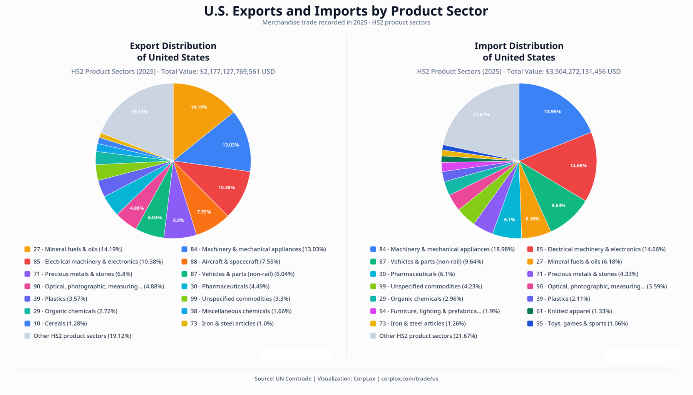

Country trade reports
Recorded exports, imports, trade balance, product composition and available partner observations.
Browse country reports →Global Trade & Market Intelligence
CorpLox organizes public international merchandise trade statistics into country, product and bilateral reports with tables, charts and analytical context.
Featured report
The United States recorded about $2.18 trillion in merchandise exports and $3.50 trillion in merchandise imports in 2025. At the HS2 level, mineral fuels and oils were the largest export sector, while machinery and mechanical appliances were the largest import sector.

Explore CorpLox
Recorded exports, imports, trade balance, product composition and available partner observations.
Browse country reports →Global trade views for HS2 product sectors, HS4 product categories and HS6 products where available.
Browse product reports →Recorded merchandise flows between countries, including product composition and directional differences.
Browse bilateral reports →About the data
Trade figures are based primarily on UN Comtrade records and are presented as customs trade indicators. Recorded exports are not the same as domestic production, recorded imports are not the same as final consumption, and customs data does not identify individual buyer-supplier relationships.
CorpLox provides the organization, presentation and analytical context around these public trade records.
Read the CorpLox methodology →About CorpLox
CorpLox focuses on structured trade data, market context and report-based exploration across countries, products and bilateral trade corridors.
Visit CorpLox